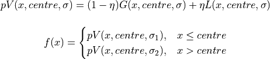
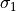
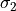
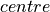

hyperspy._components.split_pvoigt module¶
-
class
hyperspy._components.split_pvoigt.SplitVoigt(A=1.0, sigma1=1.0, sigma2=1.0, fraction=0.0, centre=0.0)¶ Bases:
hyperspy.component.ComponentSplit pseudo-Voigt

Variable
Parameter

A

fraction

sigma1

sigma2

centre
Note
This is a voigt function in which the upstream and downstream variance or sigma is allowed to vary to create an asymmetric profile In this case the voigt is a pseudo voigt- consisting of a mixed gaussian and lorentzian sum
-
_function(x, A, sigma1, sigma2, fraction, centre)¶
-
estimate_parameters(signal, x1, x2, only_current=False)¶ - Estimate the split voigt function by calculating the
momenta the gaussian.
- Parameters
- Returns
- Return type
Notes
Adapted from http://www.scipy.org/Cookbook/FittingData
Examples
>>> g = hs.model.components1D.Gaussian() >>> x = np.arange(-10,10, 0.01) >>> data = np.zeros((32,32,2000)) >>> data[:] = g.function(x).reshape((1,1,2000)) >>> s = hs.signals.Signal1D({'data' : data}) >>> s.axes_manager.axes[-1].offset = -10 >>> s.axes_manager.axes[-1].scale = 0.01 >>> g.estimate_parameters(s, -10,10, False)
-
function(x)¶ Split pseudo voigt - a linear combination of gaussian and lorentzian
- Parameters
x (array) – independent variable
A (float) – area of pvoigt peak
center (float) – center position
sigma1 (float) – standard deviation <= center position
sigma2 (float) – standard deviation > center position
fraction (float) – weight for lorentzian peak in the linear combination, and (1-fraction) is the weight for gaussian peak.
-
function_nd(axis)¶ Returns a numpy array containing the value of the component for all indices. If enough memory is available, this is useful to quickly to obtain the fitted component without iterating over the navigation axes.
-
property
height¶
-